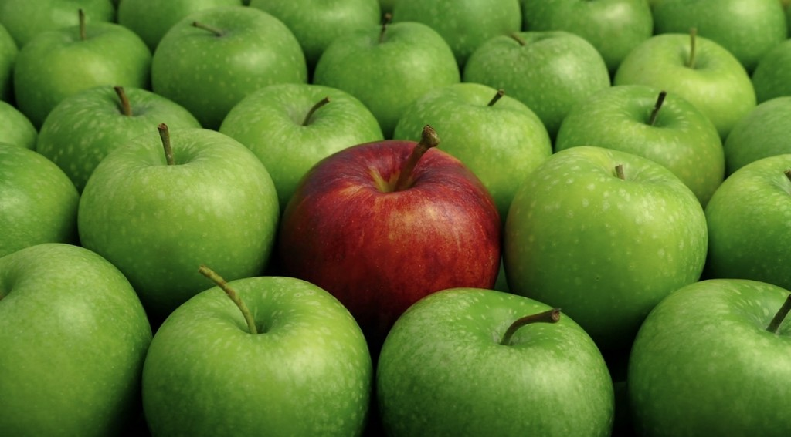

7. АПЕЛЬСИН
Замыкает список - апельсин. По мнению нашей редакци он лучший из всех цитрусовых по вкусовым качествам, но слишком сложен в очистке и разъедает полость рта кислотой. Апельсины - только по настроению.
6. АРБУЗ
Летние божества - арбузы. Значительнее лучше дыни, но их не легко выбирать, а так же слишком трудно арбузу подойти под вкусовые предпочтения большого количества людей. Они быстро становятся засахаренными, что может отталкивать. Но хороший арбуз это действительно хороший арбуз.
5. ГРУША

Висит груша - нельзя скушать. А это опасно. Груши получает свое почетное место за их аунтентичность. Но не выходят в топ три только из-за своих сходств с яблоками, которые более популярны у массового потребителя.
4. ИНЖИР
Экзотический фрукт, который сложно достать по хорошей цене. Но свежий инжир у моря это то, что должен попробовать каждый.
3. ЯБЛОКО

Бронзу забирает самый универсальный фрукт. Яблоки любят почти все, а т, кто их не любит - просто тупицы. Первобытный грех, сладость и доступность, ну что за прекрасный фрукт
2.ГРАНАТ
Серебро отдано гранату. Про его цевет снималифильмы. Он похож на россыпь драгоценных рубинов и прекрасен на вкус. Почему такому выдающимусяфрукту не отдано золото? Чистить гранат это квест, который не всегда охота проходить.
1. БАНАН
Самый лучший и самый первый, универсальный, удобный, доступный - Банан. единственный фрукт, содежащий протеин. Из него можно быстро делать выпечку и удобно носить собой, сладкий, но не приторный. Чемпион фруктовой битвы.